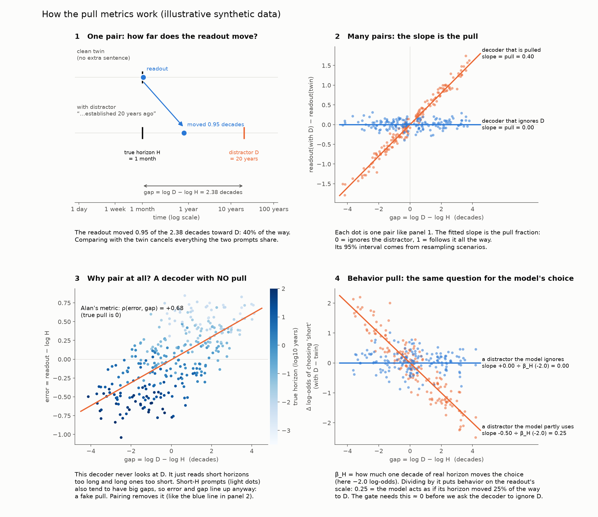
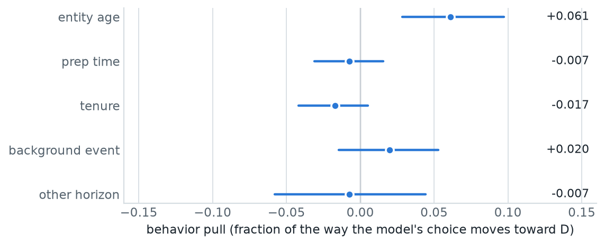
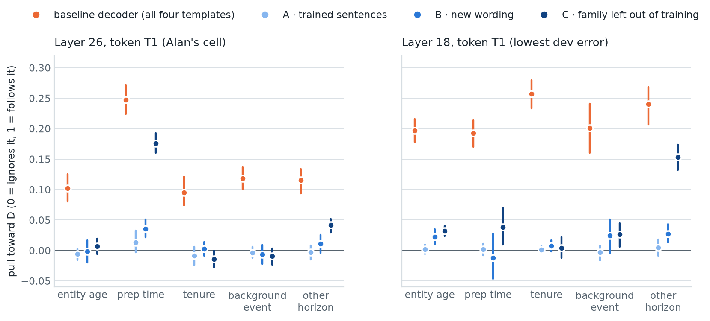
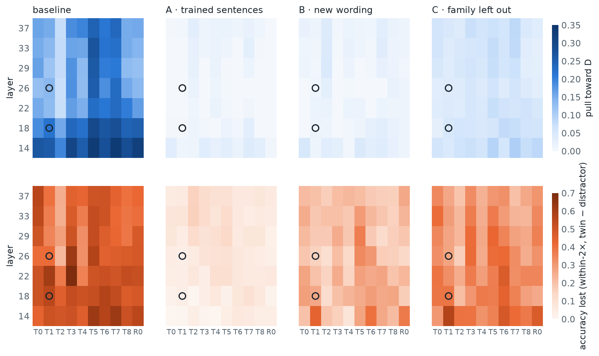
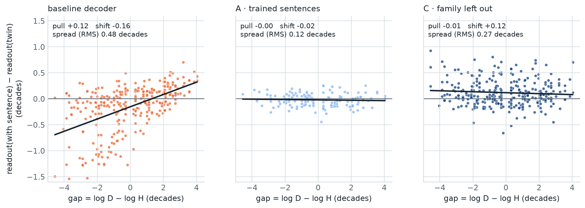

SPAR · Planning Temporal Manifolds · relevance-aware decoder
Can a horizon decoder learn to ignore irrelevant durations?
Alan found that a linear horizon decoder on Qwen3-14B is pulled toward durations the model's decision ignores. This experiment trains decoders with such distractors and tests whether they stay on the real horizon, including for new wording and for kinds of distractor they never saw.
0 · Background
The question, and what Alan found
PTM asks whether the time horizon a model is planning over can be read from its residual stream at turn-boundary tokens (the tokens between the user's turn and the model's answer). A per-turn horizon monitor would be built on such a readout.
Alan built one on Qwen3-14B: a ridge decoder from one layer × token cell to log horizon, trained on a matched matrix of two-option decisions. It works well on new scenarios. His selected cell is layer 26, token T1.
He then tested it with relevance controls: the same prompts plus one sentence with an irrelevant duration D.
Logistic coefficient of log D: −0.03 (“mention”: “… was established D ago.”) and −0.11 (“role”: “You have D to prepare your recommendation.”), versus −1.7 to −2.0 for the real horizon.
Correlation between the decoder's error and D − H at L26 T1 (mention / role). Every one of his 70 layer × token cells shows it (> +0.14 mention, > +0.30 role).
So the readout followed “durations in the prompt” rather than the horizon the model acts on. Alan listed a decoder trained with such controls, a “relevance-aware” decoder, as a next step (alan/progress-20260925.md). This experiment is that step.
Why it matters
His decoder had only ever seen prompts with one duration, so it had no reason to tell “the horizon” from “a duration”. Whether the model's activations keep the two apart was still open. If they don't, a linear per-turn monitor would report the wrong thing.
1 · Setup
What this experiment adds
Every distractor prompt is one of Alan's plain-prose matrix prompts plus one sentence with an irrelevant duration D. Each has a clean twin: the identical prompt without that sentence.
Alan's two controls become two of five families, each a different role for the duration. Each family has four templates: two seen (allowed in training) and two unseen (test only). The sentence goes in one of three positions, balanced across prompts.
| Family | Example (seen) | Example (unseen) | D range |
|---|---|---|---|
| entity age | The household's savings account was established {D} ago. (Alan's “mention”) | … has existed for {D}. | 1 day – 100 years |
| prep time | You have {D} to prepare your recommendation. (Alan's “role”) | You were given {D} to study the two options. | 1 hour – 1 month |
| tenure | You have held this role for {D}. | Your predecessor held the role for {D}. | 1 day – 30 years |
| background event | The office building was last renovated {D} ago. | The town library changed its opening hours {D} ago. | 1 day – 30 years |
| other horizon | For an unrelated decision last year, the household used a time horizon of {D}. | The previous plan, which has now ended, covered a period of {D}. | 1 day – 100 years |
Decoders use Alan's recipe (ridge from one cell to log₁₀ horizon, penalty chosen on dev). All tests use held-out scenarios only: 6 option configurations × 2 domains that no decoder saw. The tiers ask progressively harder questions:

Reused from Alan
- The
ptmpackage (prompt formats, capture hooks, storage), imported read-only fromalan/. - His matched matrix: 2,160 clean prompts, same seed and train/dev/test splits.
- His decoder recipe, his cell L26 T1, and his regex text baselines.
- His two control sentences, as the first seen template of two families.
New here
- 3,360 distractor prompts: five families, seen/unseen templates, balanced positions, each with a clean twin.
- Decoders trained with distractors (all families, and leave one family out).
- The paired pull metric, and its behavioral counterpart on the model's choice logits.
- Accuracy on distractor prompts versus their twins (section 6).
2 · Behavior
Does the model itself ignore the distractors?

How to read it
Same scale as the decoder's pull, but for the model's choice: how far its short-vs-long preference moves toward what D would imply. 0 means the sentence doesn't bias the decision.
What it shows
All five are close to zero. The largest is entity age at +0.06: small, but its interval excludes zero.
For scale, one decade of real horizon moves the choice by 5.0 log-odds. The model acts on H, not on D.
What it means
For all five families, a horizon monitor should ignore D. One detail matters later (section 6): the extra sentence still flips 7–11% of choices compared with the twin, in no consistent direction. The model's own decision is slightly disturbed by an extra sentence, without being pulled toward D.
3 · The problem, replicated
Is the ordinary decoder pulled toward D?
Baseline decoder, per family. Across all 70 cells (averaged over families) it ranges from 0.07 to 0.33, median 0.19.
On the clean twins versus the distractor prompts. One irrelevant sentence costs about half the decoder's accuracy.
For example, a clean prompt with H = 5 years reads 4.98 years. Adding “Your recommendation is due in 3 days.” moves the reading to about 9 months: 30% of the way toward 3 days on a log scale, and outside the within-2× window.
Alan's metric on this data gives +0.56 for entity age (his “mention”: +0.58) and +0.81 for prep time (his “role”: +0.74). His finding replicates on a fresh capture.
The two numbers answer different questions. Alan's correlation says how consistently the error lines up with D. The pull says how far the readout moves: 10% of the way for entity age and 25% for prep time.
Why pairing matters, in real data
After training with distractors (section 4) the paired pull is ≈ 0, yet the unpaired correlation still reads +0.02 to +0.24 at L26 T1 (tier A). Decoders over-read short horizons and under-read long ones, and D − H is correlated with H. That produces an apparent pull even when there is none.
4 · The fix
Does training with distractors remove the pull?

How to read it
Each family has four dots: orange is the baseline decoder, and the blues are tiers A → B → C, from easiest to hardest test.
What it shows
A and B: the pull is gone (at most 0.04), for trained sentences and for new wording.
C: at most 0.04 for four of five families at each cell. The exception differs by cell: prep time at L26 (0.18, against a baseline of 0.25) and other horizon at L18 (0.15).
What it means
The two exceptions are plausible. Prep time is the only family with durations under a day (1 and 2 hours). Other horizon uses the word “horizon” itself. A decoder that never saw them has no reason to discount them. Clean accuracy doesn't suffer: within-2× goes from 0.891 to 0.863 at L26 T1 and from 0.845 to 0.836 at L18 T1.
5 · Across the network
Where in the network does this hold?

Top row (pull)
The baseline is pulled most at layer 14 and at tokens T5 and T7, and least at T2. Training removes the pull in every cell for tiers A and B. Tier C keeps a faint residue: median 0.06.
The exceptions, by depth
Other horizon is hardest early and fades with depth: tier-C pull 0.20 at layer 14, 0.07–0.08 from layer 29 on. Prep time goes the other way: 0.03 at layer 14, 0.11–0.12 from layer 26 on.
What it means
The two families move in opposite directions with depth, so no single layer is robust to both kinds of unseen distractor.
6 · The main caveat
So is the readout robust to distractors now?
Not quite. In the bottom row above, tiers B and C still lose a lot of accuracy, even where the pull toward D is about zero. The sentence still moves the readout, just not toward D.

How to read it
A tilted cloud means pull toward D. A flat but wide cloud means the sentence knocks the readout around, in no particular direction.
What it shows
Baseline: tilted and wide. Tier A: flat and tight, so the sentence barely matters. Tier C: flat but more than twice as wide as A. The pull is gone; the disturbance isn't.
| Decoder / test | L26 T1: distractor | twin | L18 T1: distractor | twin |
|---|---|---|---|---|
| Baseline | 0.52 | 0.93 | 0.34 | 0.90 |
| A · trained sentences | 0.92 | 0.95 | 0.87 | 0.90 |
| B · new wording | 0.80 | 0.95 | 0.64 | 0.90 |
| C · new family | 0.67 | 0.94 | 0.52 | 0.91 |
What it means
For a monitor, what matters is getting the horizon right, not only avoiding D. Training with distractors helps a lot for sentences it has seen (A), less for new wording (B), and a new kind of distractor still costs 27 points at L26 T1 (C). A pull metric alone would miss this: it only looks in D's direction.
Caveat
For prep time, where D is always short, a pull toward D shows up partly as a constant shift (−0.53 decades in tier C at L26 T1) rather than as slope. The slope-based pull underestimates it for that family.
7 · Text baselines
Does an activation decoder beat simply reading the text?
Within-2× on all distractor test prompts. Perfect on four families; 0.68 on other horizon, which was designed to fool it.
For comparison: the naive regex (first duration in the prompt) gets 0.08, and a bag-of-words ridge 0.25–0.62.
What it means
Same conclusion as Alan's: when the horizon is written out, a regex wins. An activation monitor has to earn its place where the horizon is implicit or built up over several turns, which is where PTM is aimed.
8 · Summary
What we learned, and what's next
Findings (single turn, explicit horizon, one model, one seed)
- The model's choice ignores all five kinds of irrelevant duration (behavior pull ≤ 0.06).
- A decoder trained on clean prompts is pulled 7–33% of the way toward them (depending on layer and token) and loses about half its accuracy. This replicates Alan.
- Training with distractors removes the pull toward D: fully for trained kinds and new wording, and mostly for unseen kinds.
- It does not make the readout robust. New wording and new kinds still cost 15–39 points of accuracy.
Next steps (the kept activations suffice for the first four)
- Robustness check: the behavior pull without the 108 pairs where the model wrote
**a)in one prompt anda)in its twin. - Report a disturbance metric (spread, or accuracy versus twin) next to the pull.
- Is the disturbance one direction (“an extra sentence is here”) that can be projected out? Compare with the model's own 7–11% choice flips.
- A small non-linear probe on the same activations.
- More distractor kinds in training (needs a new capture).
- Implicit and multi-turn horizons, where a regex can't help.
9 · Reproduce
Code, model and data
| Code | relevance_aware_decoder/ on branch relevance-aware-decoder, commit 843a4af. It imports Alan's ptm from ../alan without modifying it. |
|---|---|
| Run | bash relevance_aware_decoder/scripts/run_pipeline.sh on one GPU with ≥ 40 GB: prompts → tests → capture check → capture → activation subset → evaluation → checksums. scripts/smoke_local.sh runs the same pipeline on Qwen3-1.7B on an 8 GB card. Rental procedure and costs: COST.md. |
| Model | Qwen/Qwen3-14B, revision 40c069824f4251a91eefaf281ebe4c544efd3e18, bf16, thinking off. |
| Hardware | 1× RTX PRO 5000 Blackwell (48 GB) on vast.ai, torch 2.11 + CUDA 12.8. Pipeline 30 min (capture 23.5 min, 0.26 s per prompt; answer format followed on 5,520/5,520 prompts), ≈ $1 in total. |
| Results | results/qwen3-14b_relevance_s0/: tables, per-cell predictions, per-prompt index with generations and choice logits, and a manifest (code, prompt hashes, model revision, software, hardware). |
| Activations | Not in git; published on Hugging Face as anicola/ptm-relevance-aware-decoder-qwen3-14b (≈ 3.7 GB): all 5,520 prompts at the 7 evaluated layers (14, 18, 22, 26, 29, 33, 37) × tokens T0–T8 and R0, with SHA-256 checksums. scripts/evaluate.py --acts subset reruns the full analysis from them. The full capture (41 layers × 17 positions, ≈ 39 GB) was not kept; its checksums are recorded, so a recapture can be checked for identity. |
| Figures | explainer/make_figs.py regenerates every figure on this page except the metric illustration. |